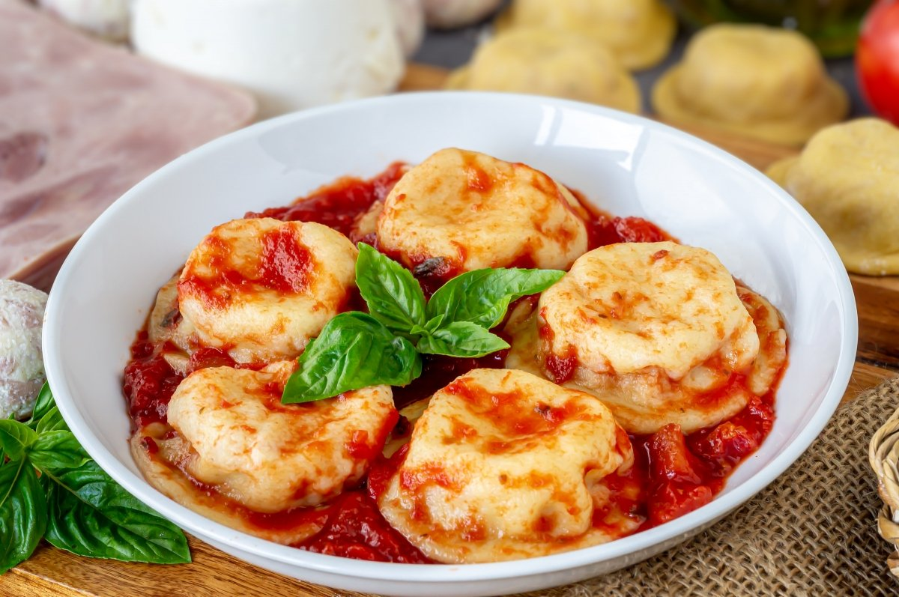

Sorrentinos

Ingredientes
- 100 gr. de harina
- 1 huevo
- 1 cucharada de aceite de oliva
- sal
Pasos
- En un bol armamos una corona de harina, le agregamos sal, un huevo y una cucharada de aceite de oliva por persona
- Una vez tengamos todos los ingredientes incorporados pasamos a la mesada y vamos a amasar 15 minutos.
- Pasado el tiempo de amasado la vamos a tapar con un repasador o envolver con un film y dejar descansar por 30 minutos.
- Estirar la masa fina, con el palo de amasar o con la máquina de pasta, espolvoreando con harina o maicena.